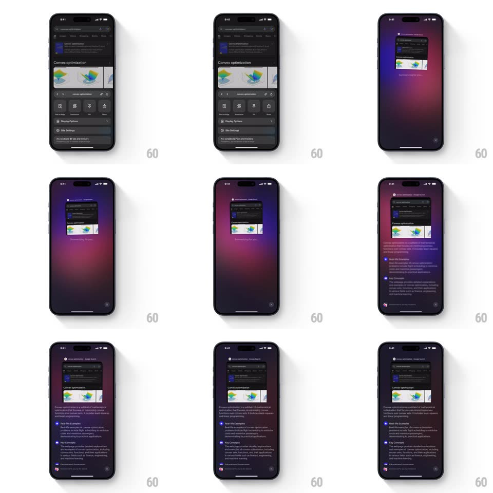

Media
Frame-by-frame

Rebuild this interaction 1:1: Arc Search's page summarizer - the webpage shrinks into a pinned mini card over a purple gradient, wiggles while the AI reads, then summary sections stack in below.

Rebuild this interaction 1:1: Arc Search's page summarizer - the webpage shrinks into a pinned mini card over a purple gradient, wiggles while the AI reads, then summary sections stack in below.
## Integration
Integration: stack-agnostic spec - springs given as stiffness/damping, timed motions as duration + curve; map every value to your framework and animation library of choice.
## Scene
A webpage in Arc. On summarize, the page scales down into a small rounded card pinned near the top over a rising purple/pink gradient backdrop ("Summarizing for you..."). Structured summary sections (Real-life Examples, Key Concepts...) then stack below the card with purple markers.
## Motion spec
Pattern: shrink-pin wiggle loader into stacked summary.
- Trigger: the page scales to ~0.35 and rounds its corners (to 16px) while rising to its pinned slot (spring ~300/24, 350ms); the purple gradient floods up behind it (translateY +40% to 0, 500ms, ease-out).
- While processing, the mini card wiggles: rotate +-2.5 degrees at ~2Hz with a tiny scale pulse (1 to 1.03), like it's being shaken loose; "Summarizing for you..." breathes beneath (opacity 0.6 to 1, 1.2s loop).
- On completion the card settles level (spring ~380/22) and summary sections stack in below it: each slides up 14px and fades (spring ~360/26, 90ms stagger), its purple marker popping first (scale 0 to 1, 140ms).
- The card stays pinned as content scrolls beneath it (with a soft shadow growing on scroll, 0 to 12px blur).
- Tapping the mini card expands the full page back over the summary (reverse spring, 350ms).
## Calibration
- The wiggle says "working on it" - stop it the instant results land, mid-cycle or not (ease to level).
- The mini page is a live scaled snapshot, not a screenshot icon.
## Reduced motion
Card scales without wiggle; sections fade.
## Don't miss
- Corners round as the page shrinks - the morph from full-bleed page to card needs the radius animated together with scale.
- The gradient backdrop persists behind the summary; it is the summarize mode, not just the loader.